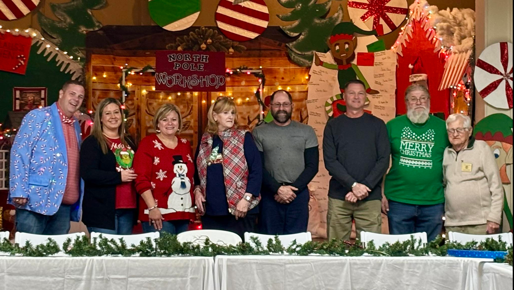

Downsville Ruritan is dedicated to improving local communites and build a better America through Fellowship, Goodwill, and Community service. Each Ruritan club surveys the needs of its comminuty and works to meet those needs. Downsville Ruritan works with the local boy scout troop 58, Conocochegue little leauge, and football providing facilities for them to meet and practice. We host a wide range of events to provide for christmas for kids, Easter egg hunt, hygine baskets, and other community events.
